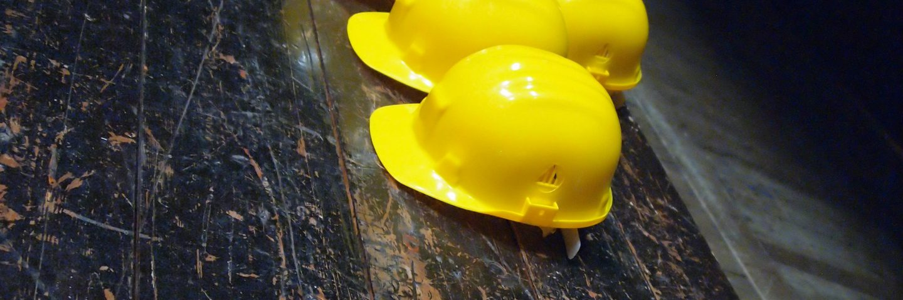
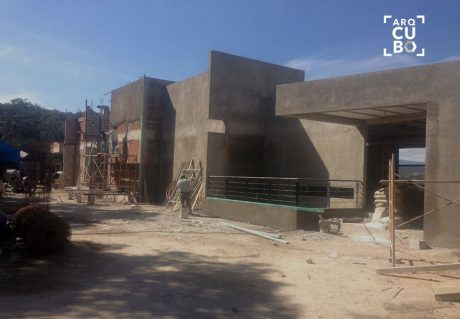
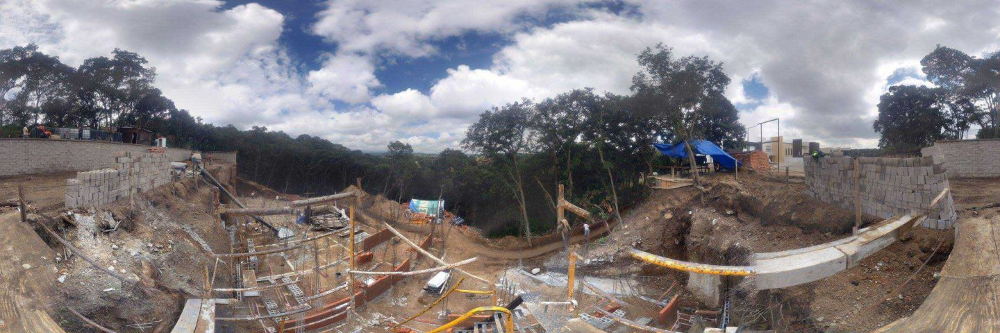

¿Cómo construirán mi casa?
¿CÓMO CONSTRUIRÁN MI CASA?
TE DESCRIBIMOS EL PROCESO DE CONSTRUCCIÓN MÁS COMÚN
Si estas interesado o tienes curiosidad sobre los pasos que sigue un arquitecto en la construcción de un Proyecto Arquitectónico, como el de tu futura casa, Arqcubo Estudio te explica las fases que regularmente conlleva la construcción de una casa.
Introducción
El sentimiento de construir tu nuevo hogar es algo indescriptible, si entiendes el proceso podrás apreciar cada detalle. En esta ocasión te resumiremos las fases de proyectos de construcción de una casa-habitación. Este proceso puede variar según el estilo de la casa y las necesidades de esta, para ti y tu familia.

Las 6 etapas para la construcción de una casa
Los proyectos de construcción de casas-habitación, pueden estructurarse en torno a seis momentos distintos, entre el arquitecto y su cliente:
- La concepción del proyecto arquitectónico
- La evaluación del concepto y viabilidad del proyecto
- La aprobación del concepto mediante el Proyecto Ejecutivo
- La Gestoría ante entidades públicas de derechos y licencias
- La construcción y supervisión de la obra
- La entrega de la obra y programas de mantenimiento

Las primeras fases en la edificación de una casa son
exploratorias, En la primera fase se reúne la mayor cantidad de
ideas e información del cliente, lo que desea lograr en su
proyecto, como por ejemplo si ya tiene un lugar en específico y
qué tipo de proyecto necesita. También sé recopilan y evalúan los
aspectos técnicos y normativos que influirán en la obra.
Tras haber definido los lineamientos y características del proyecto, el Estudio de Arquitectos desarrolla el Anteproyecto, es decir el primer concepto del proyecto de manera esquemática, siendo esta la primera propuesta formal al cliente. Adicionalmente se pueden realizar maquetas y/o simulaciones 3D para la visualización y aprobación del cliente antes de seguir a la siguiente fase y dar paso al desarrollo en profundidad del Proyecto de Arquitectura y a cada una de las especialidades que le correspondan.
Posteriormente, se genera toda la información documentada y planos para el expediente, y lograr la obtención de permisos y derechos con las administraciones públicas correspondientes.
Por otro lado se debe realizar el Proyecto Ejecutivo, que consta entre otras cosas con los documentos a detalle de cada sistema constructivo y material de la obra, para su correcta ejecución y supervisión.
En la fase de construcción se materializa todo el trabajo realizado por el Estudio de Arquitectos hasta el momento, y finalmente cuando la constructora concluye la edificación, se realiza la entrega del Proyecto y se concretan los planes de mejoras y mantenimiento del inmueble.
A continuación listamos parte de los servicios que recibirás en cada fase del proceso con el Estudio de Arquitectura que desarrolle tu proyecto.
1. IDEA
Sin duda, antes de materializarse cualquier construcción, una idea fue creada primero. Podemos decir que esta fase es para el Pre-diseño. Las ideas y gustos del cliente junto con las recomendaciones de un arquitecto pueden agilizar esta fase.
Servicios durante esta fase: Diseño conceptual, estimaciones, aspectos legales, estudios de viabilidad económica, opciones de financiación, selección del terreno.
2. CONCEPTO Y VIABILIDAD DEL PROYECTO
Tras el Pre-diseño que se opta como "diseño definitivo" continuamos con el diseño esquemático así como revisiones en la ingeniería con instituciones públicas para confirmar los términos en que la obra se edificará.
Servicios durante esta fase: Diseño arquitectónico, diseño de interiores, conceptos de diseño estructural, eléctrico, estimación de costos y resumen de presupuesto para la estimación de costos de derechos de licencia.
3. APROBACIÓN DEL CONCEPTO ARQUITECTÓNICO
Siempre trabajando de la mano con el cliente, su aprobación y revisión de cambios, se llegará a la fase de documentación dónde con detalle se desarrollan planos y expedientes para gestionar en las entidades públicas o privadas los permisos respectivos.
Servicios durante esta fase: El Proyecto Ejecutivo explica en profundidad el cómo se edificará el proyecto. Planos y cálculo estructural, Documentos de instalación eléctrica, gestión de contratos con proveedores.
4. GESTORÍA DE TRÁMITES Y PERMISOS
Si todo sigue su curso, y la fase anterior tiene una solida documentación, en un determinado plazo se otorgará la Licencia de Construcción para proceder con la edificación.
Servicios durante esta fase: Gestoría, Dirección Arquitectónica, Dictámenes, gestión de contratos.
5. CONSTRUCCIÓN / EDIFICACIÓN
En esta fase, se ejecutan los trabajos. El Estudio de Arquitectos puede empezar la cimentación de la obra, puesto que ya se tiene la Licencia de Construcción y el personal seleccionado.
Servicios durante esta fase: Supervisión de obra, Construcción, Acabados e instalaciones.
Pide con detalle que conceptos se integran al costo por m² de construcción de tu Arquitecto
PREPARACIÓN DEL TERRENO Y CIMENTACIÓN
El terreno regularmente es preparado y cimentado por el mismo equipo, a excepción si es un terreno boscoso, en ese caso se utiliza una retroexcavadora y una excavadora, se nivela el terreno, se limpia y se coloca el encofrado que sirve para ubicar los cimientos, después se cavan las zanjas. Se colocan las bases donde descansará la edificación.
Posteriormente se coloca una membrana de impermeabilización, se instalan drenajes, alcantarillas, los grifos de agua, etc. Una vez terminada esta etapa se realiza la inspección de los cimientos (cumplimiento de los códigos).
Estructura de obra gruesa
Primero se construye el esqueleto de la casa (pisos, paredes y techos). Posteriormente se instala un revestimiento de madera a las paredes exteriores y techo, se instalan ventanas y puertas exteriores, se protege la estructura con un aislante para filtraciones de agua. Después las instalaciones, plomería, sistemas eléctricos.
Finalizada esta etapa, se colocan bañeras, ductos del sistema de aire acondicionado o calefacción a través del techo y se colocan aislamientos en pisos, paredes y techos. Se instalan los receptáculos para la toma de corriente, luces e interruptores además del cableado para el sistema telefónico y de TV
Inspección:
Se vuelve a verificar que todo cumpla con los códigos de
construcción y en esta etapa se integran las placas de yeso en la
construcción.

6. MANTENIMIENTO Y MEJORAS
En esta fase, la casa es entregada exitosamente al cliente, es completamente habitable, y se diseña los planes de mantenimiento incluidos en la garantía del constructor, así como futuras mejoras y mantenimiento.
Servicios durante esta fase: Programa de mejoras,
gestión de instalaciones y mantenimiento del inmueble.
Recorrido final
En Arqcubo, haremos un recorrido final por tu nueva casa para que conozcas el detalle y características del diseño e instalaciones, además del funcionamiento de los sistemas, el mantenimiento debido, detalles de la garantía y procedimientos sugeridos. Puedes aprovechar este recorrido para resolver dudas o planear cualquier mejora futura en tu hogar.
Concluyendo...
Esperamos que en este artículo hayamos profundizado lo
suficiente para resolver algunas de tus dudas en el proceso de
construir tu casa.
Recuerda, si necesitas alguno de nuestros servicios, puedes contactarnos en:
E-mail: informes@arqcubo.com